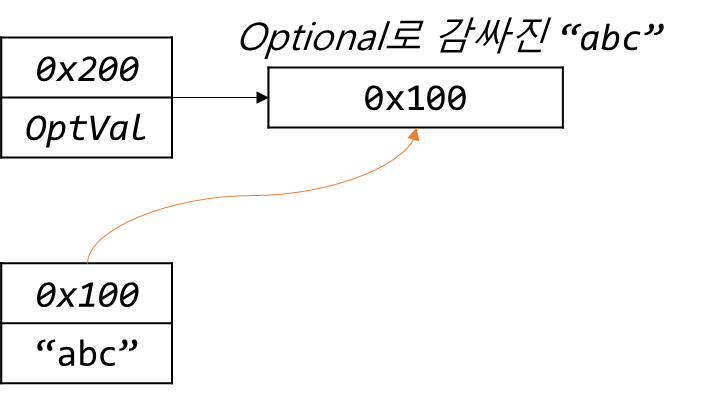

Ch14-35~39. Optional< T >
0. 목차
Chapter14. 람다와 스트림
Ch14 - 35. Optional< T >
Ch14 - 36. Optional< T > 객체 생성하기
Ch14 - 37. Optional< T > 객체의 값 가져오기
Ch14 - 38. OptionalInt·Long·Double
Ch14 - 39. Optional< T > 예제
Ch14 - 35. Optional< T >
▶ Optional<T>란?
▷ T타입 객체의 래퍼 클래스
- 래퍼 클래스 :
Integer,Long…같은 클래스
▷ 모든 종류의 객체 저장 가능(null도 저장 가능)
public final class Optional<T> {
private final T value; // T타입의 참조 변수
...
}
▶ Optional<T>과 null
▷ 간접적으로 null을 다룸으로 NullPointException의 위험을 감소
▷ null 체크 시, if문 필수 = 코드 증가 불가피 -Optional<T>→ 코드 간결
Optional<T>사용XObject result = getResult(); // 반환값 : null or 객체 // 반환값이 null일 때 result.toString() // NullPointExeption 발생 // if문을 사용하여 NullPointExeption 처리 → 코드 증가 if(result != null) System.out.println(result.toString());
Optional<T>사용O
Ch14 - 36. Optional< T > 객체 생성하기
▶ Optional<T> 객체 생성하는 방법
▷ Optional<String>에 “abc” 넣기
String str = "abc";
Optional<String> optVal = Optional.of(str);
// 위의 두 문장을 줄여 한 문장으로 생성
▷ Optional<String> optVal = Optional.of("abc");

▷ Optional<String>에 null 넣기
▷ ofNullable() 사용하여 넣어야 함
▷ Optional<String> optVal = Optional.ofNullable(null); // OK
Optional<String> optVal = Optional.of(null); // ERROR!, NullPointException 발생
▶ null 대신 Optional<T> 객체 사용하기
▷ null 초기화는 되긴 되지만 바람직하지 않음
Optional<String> optVal = null;
▷ 빈 객체로 초기화 하기!
Optional<String> optVal = Optional.<String>empty();
- iv를
null대신""로 초기화 한 것처럼
ObjArr = newObject[0]; // GOOD! OjbArr = null; // BAD!
Ch14 - 37. Optional< T > 객체의 값 가져오기
▶ Optional<T> 객체의 값 가져오기 : get()
▷ optVal에 저장 된 값을 반환
▷ optVal에 저장 된 값이 null일 때, 예외 발생
Optional<String> optVal = Optional.of("abc");
String str1 = opVal.get(); // "abc" 반환
▶ Optional<T> 객체의 값 가져오기 : orElse()
▷ optVal에 저장 된 값이 null일 때, ""를 반환
Optional<String> optVal = Optional.of("abc");
String str2 = opVal.orElse(); // "abc" 반환
▶ Optional<T> 객체의 값 가져오기 : orElseGet()
▷ 람다식 사용 가능
Optional<String> optVal = Optional.of("abc");
String str2 = opVal.orElseGet(String::new); // 메서드 참조
orElseGet()선언부 메서드
T orElseGet(Supplier<? extends T> other)
▶ Optional<T> 객체의 값 가져오기 : orElseThrow()
▷ 예외 종류 지정 가능
T orElseThrow(Supplier<? extends X> exceptionSupplier)
▷ optVal에 저장 된 값이 null일 때, 예외 발생
Optional<String> optVal = Optional.of("abc");
String str2 = opVal.orElseThrow(NullPointerCexception::new);
▶ Optional<T> 객체의 값 가져오기 : isPresent()
▷ Optional 객체의 값이 null 이면 false, 아니면 true 반환
if(Optional.ofNullable(str).isPresent()) { // if(str != null)
System.out.println(str);
}
// 위 두줄을 한 줄로 변경
Optional.ofNullable(str).ifPresent(System.out::println);
isPresent(Consumer)가null이면 아무 일도 하지 않음isPresent(Consumer)가null이 아닐 때만 작업 수행
▶ 실습
▷ 배열 초기화 : null → BAD
int[] arr = null;
System.out.println("arr.length : " + arr.length);
// console
// NullPointerException 발생
Exception in thread "main" java.lang.NullPointerException: Cannot read the array length because "arr" is null
at baek.Play3.main(Play3.java:12)
▷ 배열 초기화 : new int[0]; → GOOD
int[] arr = new int[0];
System.out.println("arr.length : " + arr.length);
// console
arr.length : 0
▷ Optional<String> 초기화 : null → BAD
Optional<String> opt = null;
System.out.println("opt : " + opt);
// console
null
▷ Optional<String> 초기화 : Optional.empty → GOOD
Optional<String> opt = Optional.empty();
System.out.println("opt : " + opt);
// console
opt : Optional.empty
▷ Optional<String> 입력 : Optional.of
Optional<String> opt = Optional.of("abc");
▷ 빈 문자열 String에 opt.get() 넣기
String str = "";
str = opt.get();
// console
// NoSuchElementException 발생 : 아무것도 안들어 있다는 것
Exception in thread "main" java.util.NoSuchElementException: No value present
at java.base/java.util.Optional.get(Optional.java:141)
at baek.Play3.main(Play3.java:19)
▷ NoSuchElementException 발생 : try-catch문 작성
▷ try-catch문 : opt.get();에서 예외 발생하면 ""로 초기화 시킴
String str = "";
try {
str = opt.get();
} catch (Exception e) {
str = "";
}
System.out.println("str : " + str);
// console
str : // 빈 문자열 들어있어서 아무것도 안 나옴
▷ 코드가 너무 길어짐
▷ 한 문장으로 해결 가능 : orElse()
String str = "";
str = opt.orElse("EMPTY"); // Optional에 저장 된 값이 null이면 "EMPTY" 반환
System.out.println("str : " + str);
// console
str : EMPTY
orElse()Code
public T orElse(T other) { return value != null ? value : other; // null에 대한 설정이 이미 들어가 있음, 이런 거 때문에 코드가 간결 }
▷ 람다식 : orElseGet()
String str = "";
str = opt.orElseGet(() -> new String()); // 람다식
str = opt.orElseGet(String::new); // 메서드 참조
System.out.println("str : " + str);
// console
str :
Ch14 - 38. OptionalInt·Long·Double
▶ OptionalInt·OptionalLong·OptionalDouble란?
▷ 기본형 값을 감싸는 래퍼 클래스
▷ Optional 보다 성능이 좋아서 사용
Optional<T>: 참조형OptionalInt·Long·Double: 기본형
OptionalIntCode
public final class OptionalInt { ... private final boolean isPresent; // 값이 저장되어 있으면 true private final int value; // int 타입의 변수 }
▶ OptionalInt·Long·Double 값 가져오기
▷ Optional 클래스 : Optional<T>
- 값 반환 메서드 :
T get()
▷ Optional 클래스 : OptionalInt
- 값 반환 메서드 :
int getAsInt()
▷ Optional 클래스 : OptionalLong
- 값 반환 메서드 :
long getAsLong()
▷ Optional 클래스 : OptionaDouble
- 값 반환 메서드 :
double getAsDouble()
▶ isPresent()
▷ 빈 Optional 객체 비교
OptionalInt opt = OptionalInt.of(0);
OptionalInt opt2 = OptionalInt.empty();
둘 다 value = 0; 무엇으로 구분 가능?
→ isPresent()
▷ isPresent()로 구분하기
System.out.println(opt.isPresent()); // true, '0'이 들어있으니까
System.out.println(opt2.isPresent()); // false, 아무것도 안 들어있음
▷ equals()로 비교하기
System.out.println(opt.equals(opt2)); // false
Ch14 - 39. Optional< T > 예제
▶ Optinal<T>도 map() 사용 가능
▷ Optinal<String> 생성
▷ Optinal<String> -map()→ Optinal<String>
Optional<String> optStr = Optional.of("abcde");
Optional<Integer> optInt = optStr.map(String::length);
System.out.println("optStr : " + optStr.get());
System.out.println("optInt : " + optInt.get());
// console
optStr : abcde
optInt : 5 // abcde = 5
▶ Optional.of("")
▷ int result1에 Optional.of()로 "123" 넣기
int result1 = Optional.of("123")
.filter(x -> x.length() > 0) // true, 123 = 3 > 0
.map(Integer::parseInt).get(); // "123" → 123
System.out.println("result1 : " + result1);
// console
result1 : 123
▷ int result2에 Optional.of()로 "" 넣기
int result2 = Optional.of("")
.filter(x -> x.length() > 0) // false, "" = 0
.map(Integer::parseInt).orElse(-1); // "" 일 때, -1 출력
System.out.println("result2 : " + result2);
// console
result2 : -1
▷ Optional에 값이 있으면 x를 result3으로 출력
Optional.of("456") // Opthional에 "456" 입력
.map(Integer::parseInt) // "456" → 456
.ifPresent(x -> System.out.printf("result3 : %d%n",x)); // true → 작업 수행 → result3 출력
// console
result3 : 456
▶ OptionalInt.of(0); vs OptionalInt.empty();
▷ OptionalInt.of(0); vs OptionalInt.empty(); 생성
OptionalInt optInt1 = OptionalInt.of(0); // 0을 저장
OptionalInt optInt2 = OptionalInt.empty(); // 빈 객체를 생성
▷ isPresent()
System.out.println(optInt1.isPresent()); // true
System.out.println(optInt2.isPresent()); // false
▷ getAsInt()
System.out.println(optInt1.getAsInt()); // 0
System.out.println(optInt2.getAsInt()); // NoSuchElementException
▷ equals()
System.out.println("optInt1 : " + optInt1);
System.out.println("optInt2 : " + optInt2);
System.out.println("optInt1.equals(optInt2)? " + optInt1.equals(optInt2));
// console
optInt1 : OptionalInt[0]
optInt2 : OptionalInt.empty
optInt1.equals(optInt2)? false